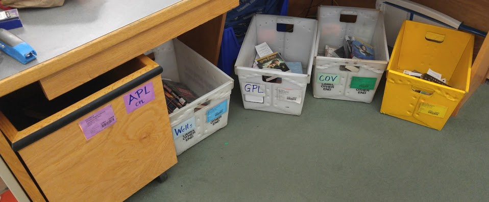
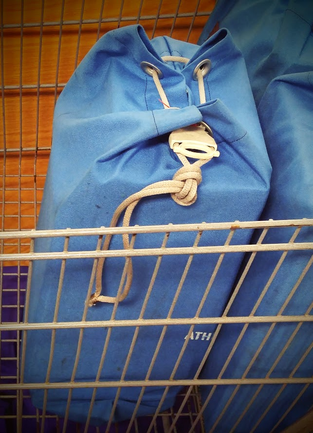

My visit to Nelsonville Public Library (Athens County, Ohio)
Intro -- Why am I doing this, and what am I trying to learn?
Monday -- Nelsonville Branch
Meeting Nick
I started the day talking to Nick [last name?] FIX-ME and Owen Leonard [Web design, and ByWater contact]. We chatted for a few minutes; we talked about Nick's background [PhD in Philosophy, then moved into the library at Columbus -- "I realized immediately that that's what I should have been doing all along"].
Nick explained that the Columbus library system had a home-grown ILS built in Cobol in the early 80s. They had a programing staff of 12. In the early 90s, they realized that they were very over-committed to that system, and they needed to either a) sell the system commercially so that they could amortize their programmer cost over multiple libraries, or b) phase out their programmer staff... they eventually did the latter. Nick was impressed with the knowledge of the programming staff, and said that he liked the flexibility of being able add new features. During the analysis phase, it was determined that the one thing that the in-house system did better than anything else on the market was holds and branch transfers. Nick got a wistful look and said "I've never worked with a system that did a better job with that."
Nick eventually moved into an administrative position at the Chillicothe public library, which was using Horizon 7. Horizon was promising great things in version 8, but was instead bought out by Sirsi Dynix. Nick wasn't happy with that system, and made enough noise that Sirsi eventually sent programmers to talk to them. When the programmer finally arrived and talked to Nick, he listened carefully, and said "Oh... I'd never really looked at it like that...". I got the distinct impression that this was too little, too late.
Eventually, Nick moved into the directorship at Athens. He likes the open-source nature of Koha -- having a system that can be improved, and has been improved over time gives him a feeling of agency and control that is closer to the Columbus library system where he started.
We talked a little about what I'm going to be doing here -- I explained my background, and that I'm looking for a more hands-on experience, bridging the gap between my technical knowledge, and firsthand knowledge of how a library works. Owen and Nick are interested in seeing if there are work-flows in Koha that are newer, and simply haven't been implemented at Athens.
Chat during the nickel tour
Owen gave me a quick tour of the Nelsonville Public Library -- it's a small-to-medium sized branch, with administrative offices and a conference room up a flight of stairs. We were talking before the circ staff arrived (the doors open at 11). I asked Owen if there were any pain points in Koha... he had to stop and consider, and said "Well, I'd have to think about things that we do outside of Koha..." and then he couldn't really come up with an answer... but a little later, when we were talking, he mentioned that they don't really like allowing item level holds, because borrowers tend to end up waiting for items that they wouldn't otherwise have to -- but they do allow holds on periodicals, and the inability to place a hold on a specific issue there was a problem.
Circ Desk -- Book drop time
Owen's original plan was perhaps for me to talk to the cataloging staff on Monday morning, but we hadn't really made any firm plans, and they weren't really ready... so we decided that I would work with the circ staff at Nelsonville, just to start slowly -- trial by fire will be working circ at the Athens branch in mid-afternoon. Here are a few observations:
- Hold slips are written by hand -- budget concerns a few years ago precluded receipt printers, but it may be time to revisit that.
- They don't use any type of library Kiosk software.
- When pulling holds, serials cause a slowdown -- it's easy to find the title, but harder to find the issue. I had a brainstorm about creating a gravatar style icon for each issue, viewable on the barcode label and the hold slip.
- The circ screen has a nice "This patron has X remaining checkouts" dashboard:

... I'm not sure if it's part of standard koha and I'd just never noticed it, or if it's some special sauce in intrenetuserjs.
- One thing that I hadn't considered, because Koha doesn't really look at things this way, is that branch transferred items are grouped and shipped together.
- At the circ desk there are bins for grouping the items by destination branch

- These are bagged and shipped to other branches. Each bag has an ID number, and those ID numbers are tracked. 
- They've had problems losing bags of items.
- As the items are added to a bag, This is tracked outside of Koha.
- Koha's view of items is 'Checked in' or 'Checked out' with side routines for 'Holds shelf', 'Branch transfer', and there's the whole holds cart thing... but there's no way to actually track status in the sense of "I'm going to scan these things as I put them into this box, and then ship it over there, and the other party is going to scan them on receipt, and we'll see if they match" type of process.
- Thanks to the circ staff at Nelsonville: Eric, Deborah and Abie (I'm looking up the band Good Charlotte right now, on Abie's recommendation).
Tuesday -- Circulation
Morning -- Nelsonville
Afternoon -- Athens
[planned] * Working in busy circ desk, seeing work flow under pressure.
Wednesday -- Cataloging